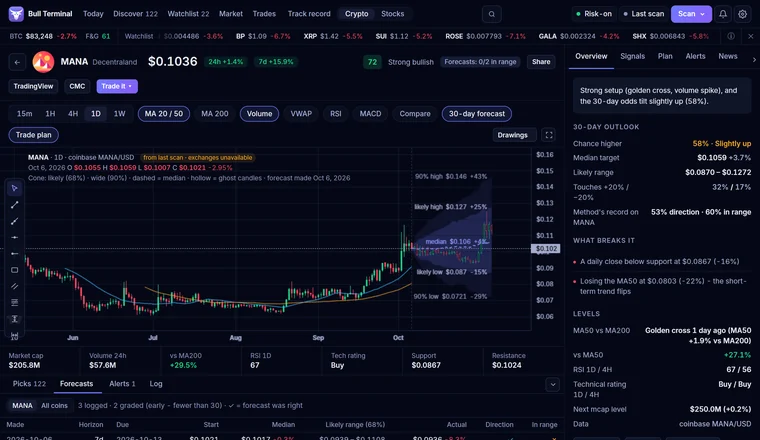
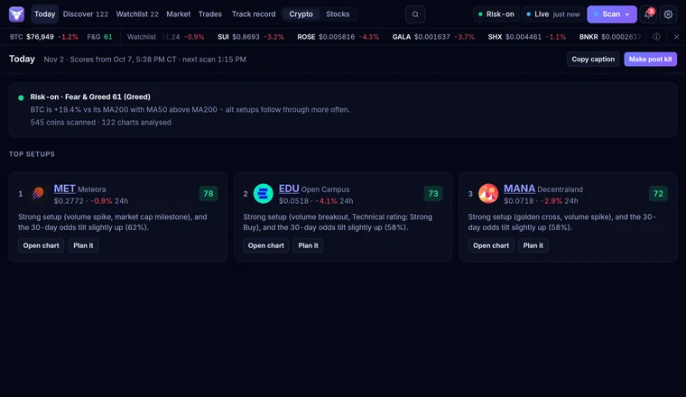
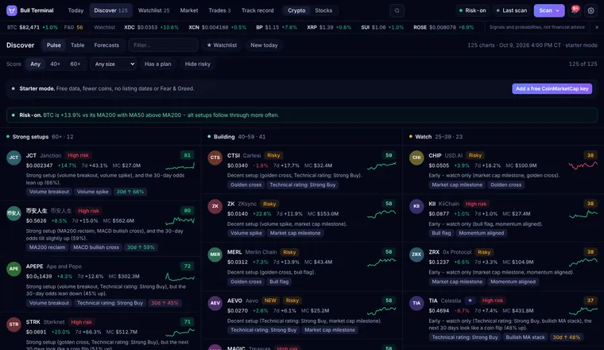

Windows app · crypto + US stocks
The market scanner that grades its own picks.
Bull Terminal scans hundreds of coins and stocks every day, scores each setup 0-100, hands you a plan with entry, stop and targets - and keeps score of every pick, wins and losses.

You're on the list
Move up the list - share your link
Every friend who joins through your link moves you closer to the front. When the waitlist hits 100, the download goes out to the front of the list first.
Your link carries a short code, never your email.
What it does
Plain English, no hype. It runs on your PC with free data - no account needed to start.
-
Daily picks with a score
It scans hundreds of small and mid-cap coins and gives every setup a score from 0 to 100. The Today page shows the market mood in one line and the top 3 setups.
-
A plan for every setup
Entry zone, stop and targets, the odds of hitting the target before the stop, and a position sizer for your account size and risk.
-
A track record with the losses in it
Every pick is saved before the outcome and graded automatically - against simply holding BTC (or SPY for stocks). No cherry-picking.
-
Alerts to your phone
Price, score and plan alerts - even on lines you draw on the chart - sent to Discord or Telegram. Pro adds new strong setups and a morning briefing.
-
A screener you build yourself
Filter by RSI, score, odds, market cap, volume, % moves or distance from the 200-day average. Watch the match count as you type and save it by name.
-
Crypto and US stocks
Crypto out of the box; US stocks and ETFs with Pro. Every coin gets a risk check first: hard to sell, brand-new, already pumped or heavy dilution.


Screenshots are from a real scan on Oct 7, 2026 - not live prices, not financial advice.
Every pick graded. Wins and losses.
Most "signal" accounts show you the winners. Bull Terminal is built to show you whether the score actually works - including when it doesn't.
-
Logged before the outcome
Every pick and forecast is saved the moment the scan makes it, with the score it had at the time - before anyone knows how it turns out.
-
Graded automatically
Checked again 7 and 30 days later, with trading costs taken off, and compared with just holding BTC (SPY for stocks). One pick per coin at a time, so nothing is counted twice.
-
Shown in full
The track record groups every graded pick by its score - 80+, 60-79, 40-59, under 40 - so you can see if higher scores really did better, plus which signals helped and which didn't.
No profit promises. It's a research tool: odds and history, so you can decide. Markets can go to zero - only risk what you can afford to lose.
Free vs Pro
The Free plan is a real crypto scanner, not a demo. Pro is for people who use it every day. New installs get a 14-day Pro trial.
| Feature | Free | Pro |
|---|---|---|
| Crypto scans with 0-100 scores | Top 15 picks | Every pick |
| Trade plans (entry, stop, targets) | 5 followed | Unlimited |
| Watchlist | 25 coins | Unlimited |
| Alerts in the app | 10 | Unlimited |
| Phone alerts (Discord / Telegram) | 3 a day | Unlimited + new strong setups + morning briefing |
| Live 30-day forecasts for any coin | 2 a day | Unlimited |
| Full track record | ✓ | ✓ + model learning |
| Screener, chart tools, paper trading, journal, Excel export | ✓ | ✓ |
| US stocks + ETFs | - | ✓ |
| Background scans (window closed) | - | ✓ |
| Futures funding + open interest | - | ✓ |
| Phone view (read-only, home Wi-Fi) | - | ✓ |
| "Made with Bull Terminal" on shared images | Shown | None |
| Price | $0, forever | $9 / month, or $59 once (early bird) |
Questions
Is it Windows only?
Yes, for now: Windows 10 and 11. A Mac version is planned for later. Phone alerts go to Discord or Telegram, so they work on any phone.
Is it really free?
Yes. The Free plan is the full crypto scanner and never expires. Pro is optional, and every new install gets a 14-day Pro trial first. Nothing you save is deleted when the trial ends.
Do I need an API key or an account?
No. It starts with free data and no sign-up. A free CoinMarketCap key (about 2 minutes to get) unlocks full scans. Stocks (Pro) need a free Alpaca account.
Does it trade for me or hold my money?
No. It never places orders and never holds money or crypto. Paper trading uses pretend money, and "Trade it" just opens your exchange's own site.
Is this financial advice?
No. Bull Terminal is a scanner and research tool that shows statistics - scores, odds and past results. You make your own decisions.
How are the picks graded?
Each pick is saved when the scan makes it, then checked 7 and 30 days later against holding BTC (or SPY for stocks), with trading costs taken off. Losses stay in the record.
Is my data private?
Everything stays on your PC - your keys, watchlists, plans and trades. The app has no accounts, no tracking and no analytics.
How do updates work?
The app tells you when a new version is out and updates itself with one click. Your settings and data are kept. Updates are signed, so the app only installs real Bull Terminal releases.
Get it first
Join the free waitlist. When it hits 100, the download link goes out - to the front of the list first.